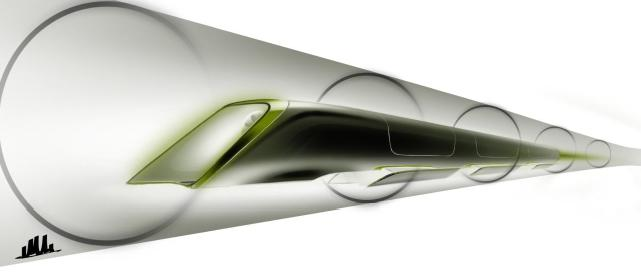
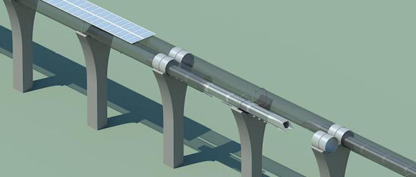

Hyperloop
2013-08-13
Впечатления о проекте
Hyperloop
от
Elon Musk
.

12 августа ночью, когда появился этот документ, я подумал, что теперь начнётся разгромная критика. Обнаружится куча ошибок, из-за которых Musk отказался от проекта.
Я прочитал документ внимательно от начала до конца. Там нашлись ответы на все мои заранее продуманные возражения. В итоге, сложилось впечатление, что проект классный, и можно начинать экспериментальную отработку. Система вполне реализуема и безопаснее самолёта.
Некоторые параметры для тех, кто пока не читал:
- Одиночный вагончик рассчитан на 28 пассажиров. Они полулежат в позе космонавта, похоже на то, как мы сидим пристёгнутые в самолёте. В "окнах" пассажирам показывают пейзажи, мимо которых они проезжают. Ходить по вагончику невозможно. Внутренне сечение 1.35x1.1 м.
- Вагончики летят на воздушной подушке в трубе с давлением 0.001 атм . Труба из стали 23мм стоит на железобетонных пилонах высотой 6м и выше через каждые 30м. Интервал между вагонами 30км. Скорость вагона1000 км в час. Воздух в трубе в среднем не движется.
- Кроме низкого давления для снижения сопротивления воздуха на борту вагончика есть компрессор , засасывающий воздух спереди. Этот воздух используется для воздушной подушки, для повышения давления на корме, для поддержания 1 атм в салоне. Компрессор на электрической тяге. Мощность как у автомобиля.
- Ускорение, торможение, компенсация замедления обеспечиваются линейным электродвигателем . Мощность подводится к части двигателя на трубе (статору). Средняя необходимая тяга на вагончик 32кг. Вес вагона 3.1тонны.
- Если поверх трубы выложить солнечные батареи полосой в 2м, то в хороший день они дадут вдвое больше мощности, чем нужно. Предусмотрены системы накопления лишней энергии в виде сжатого воздуха. Энергия торможения вагона тоже возвращается.

В проекте обсуждается много тонкостей - режим работы станции, действия при разгерметизации, конструкция для компенсации тепловых движений трубы и т.д. Советую почитать для поднятия духа. Проект Hyperloop-Alpha (pdf,eng) разработан специалистами SpaceX и TeslaMotors.